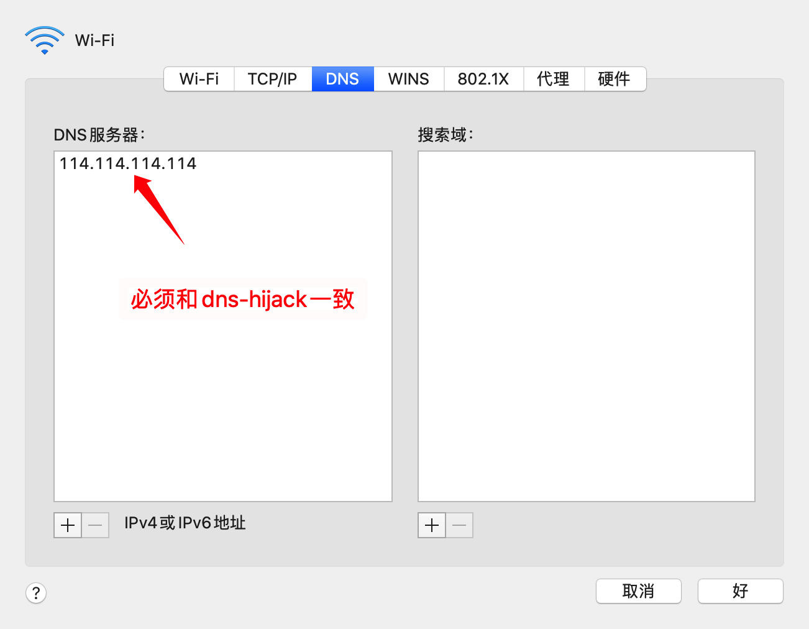

macOS特性
从0.10.1版本开始，CFW开始支持macOS平台
增强模式/TUN
由于Clash核心在mac平台上直接支持TUN模式，但是需要使用root权限启动。
启动TUN模式需要进行如下操作：
- 进入
General中，点击Root Enable下方Authorize小字，弹出授权输入密码（当前版本下，每次更新CFW，都需要重新授权） - 在使用的配置文件中加入如下内容：
dns: enable: true enhanced-mode: redir-host nameserver: - 1.1.1.1 # 真实请求DNS，可多设置几个 experimental: interface-name: en0 # 出口网卡名称，或者使用下方的自动检测 tun: enable: true stack: system dns-hijack: # DNS劫持设置为系统DNS - 114.114.114.114 # 可任意设置，但为了保证CFW关闭后能不影响联网，建议设置真实能访问的DNS服务器 macOS-auto-route: true macOS-auto-detect-interface: false # 自动检测出口网卡 - 系统DNS设置： 
参考：https://github.com/Dreamacro/clash/releases/tag/premium
你可以使用mixin将上面内容合并至所有配置文件中，并使用Mixin开关TUN模式
dns-hijack不可以劫持局域网地址的DNS，如192.168.0.0/16，请务必手动设置系统DNS